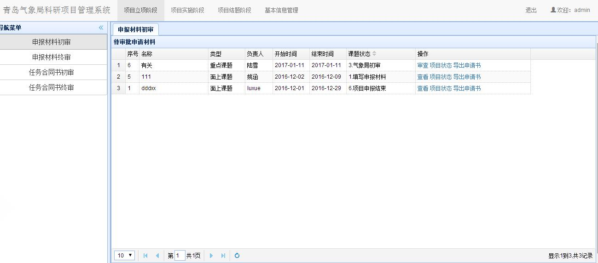
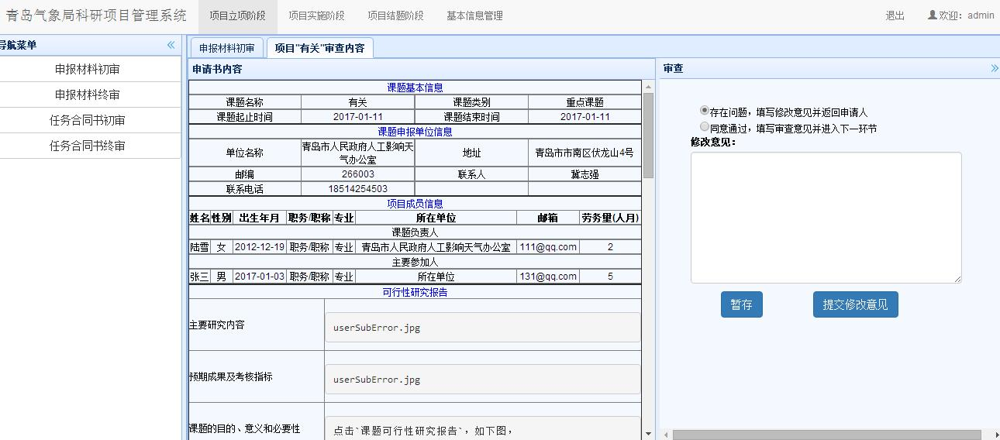
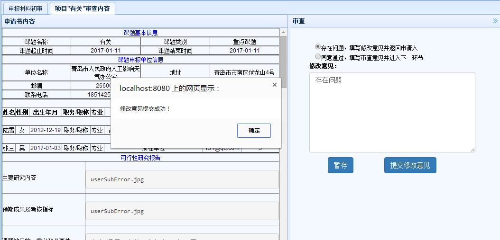
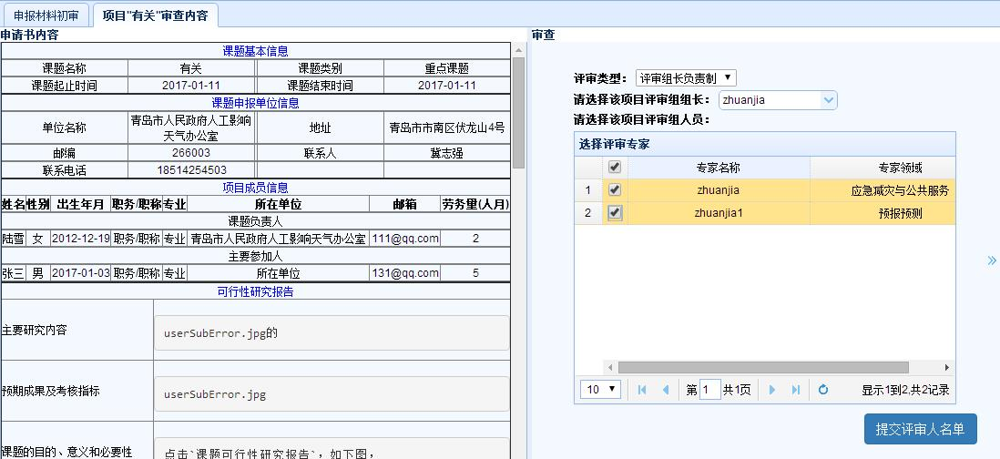
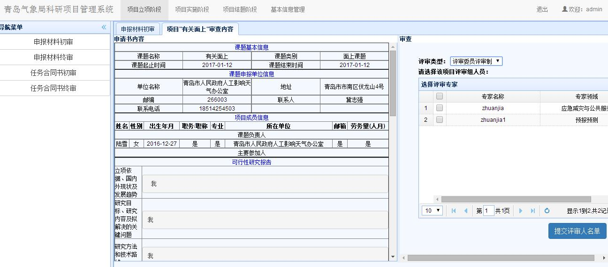
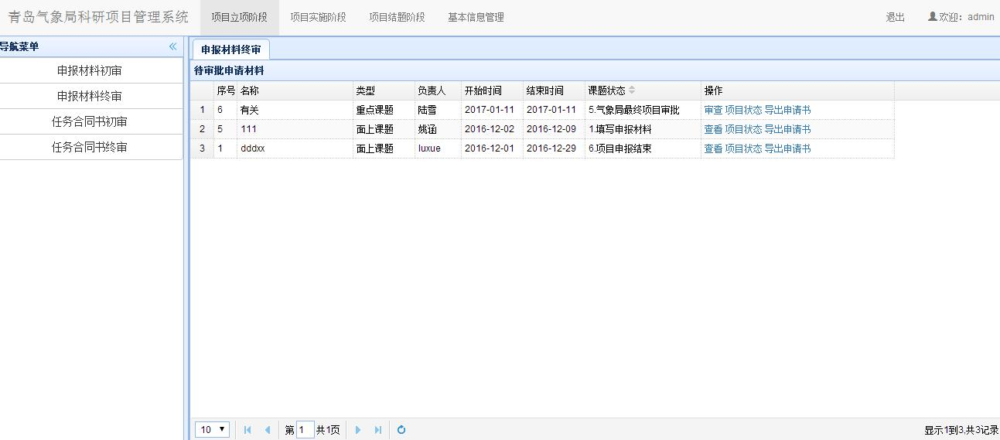
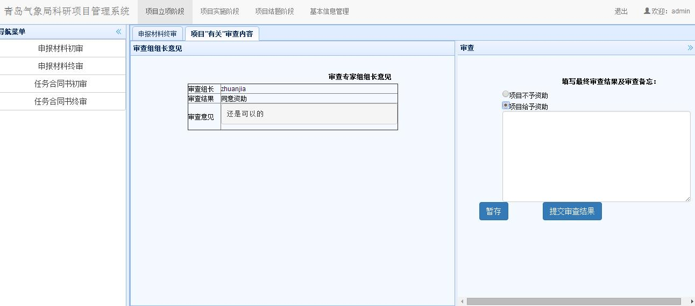
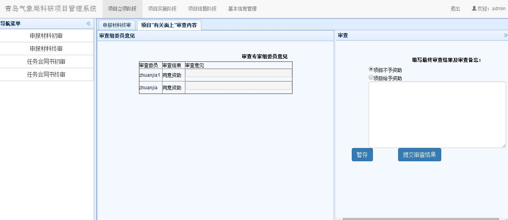

1. 项目立项阶段
气象局管理员在主界面上部导航条点击项目立项阶段，即可进入立项阶段界面。
1.1. 课题申请书初审
1.1.1. 待审批申请书列表
在项目立项阶段界面，点击左侧申报材料初审链接，可以显示课题申请书初审模块，如下图所示，显示界面中包含了当前单位的所有项目列表。

1.1.2. 申报材料初审
列表中，课题状态一栏中应该进行处理的课题显示在最前面，并能进行审查操作，如果状态不是当前进行处理的，则操作一栏中只显示查看。其他操作同申请人操作。点击审查后，能查看申请项目的基本信息，如下图。

右边是审查界面，若选择存在问题选项，则在下方填写修改意见，如下图。提交修改意见后会返回给申请人，课题状态恢复成第一步1.填写申报材料，申请人登录后，通过点击课题申请书操作一栏中新增的审查及评审意见选项，查看意见后修改信息并提交给单位管理员，然后由单位管理员提交给气象局管理员。点击暂存按钮则是临时保存修改意见。

若没有问题，则选择同意通过选项，并点击提交审查意见，来到评审委员评审界面。其中评审类型选项共有两类：
第一类评审组长负责制是有多个专家进行评审，所有意见会汇总到评审组长处，由组长写汇总报给提交给气象局管理员。如下图，在选择组长下拉列表中选择评审组长，在选择评审专家出勾选参与评审专家。

第二类评审委员评审制是选择多个评审专家，所有意见共同呈现诶气象局管理员。如下图，有多个评审委员评审完成后提交。

注意：每次操作可再次点击左侧导航栏内模块刷新课题列表
提交成功后，课题进入4.专家评审状态。
1.1.3. 申报材料终审
点击左侧导航栏的申报材料终审链接，若专家评审完毕，则出现5.气象局最终项目审批课题状态，如下图。

1. 第一类，评审组长负责制点击审查操作，进入审查界面如下图，只能看见组长的汇总。

2. 第二类，评审委员评审制点击审查操作，进入审查界面如下图，能看见每一个评审专家的评审结果。

如果选择项目给予资助后提交，课题状态为6.项目申报结束，如下图。至此申报结束。

如果选择项目不予资助，则申报也结束，但立项不成功。